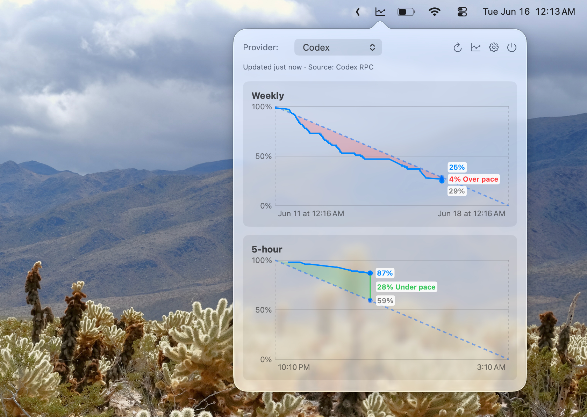

Coding agents are most valuable when you are in the middle of real work. They help read unfamiliar code, write tests, explain failures, sketch refactors, and keep momentum through tedious implementation details. That is also why usage limits can be so disruptive. The limit does not usually arrive when you are casually experimenting. It arrives during a session where context is expensive to rebuild.
Managing that kind of limit is not just about knowing the total used. It is about knowing whether the current pace is sustainable. A counter can say that you have used a certain amount. It cannot say whether that amount is normal for this point in the window, whether the current session is running hot, or whether you are likely to exhaust usage before reset.

The budget line idea
A useful way to think about coding-agent usage limits is as a budget over time. If the window resets at a known time, there is an implied ideal pace. You do not have to follow that line perfectly, and sometimes you should deliberately spend faster because the work is important. But the line gives you a reference.
AgentPace makes that reference visible. It overlays actual usage against the ideal pace line so you can see the gap. If actual usage is above pace early in the window, you know the current burn rate may force a tradeoff later. If actual usage is near the line, the window is being used steadily. If it is below the line, you have more room than the raw total might suggest.
Why counters are insufficient
Counters flatten the situation. The same usage total can mean different things depending on where you are in the window. Thirty percent used near the beginning of a weekly window is very different from thirty percent used near the end. The number only becomes useful when it is placed against time remaining.
That is the core reason AgentPace exists. It is not trying to become a general productivity dashboard. It is trying to answer one narrow question with enough context: are you spending coding-agent usage faster than planned?
Short windows and weekly windows
Different coding agents expose different kinds of limits. Some windows are short enough that a single intense work block can consume a meaningful share. Others are long enough that the risk builds gradually over days. Both cases benefit from pacing, but for different reasons.
For short windows, pacing helps you avoid surprise exhaustion during a focused session. For weekly windows, pacing helps you avoid a slow drift where usage feels fine until the remaining budget is suddenly tight. AgentPace is designed around Claude Code and Codex-style windows, including shorter reset windows and weekly usage patterns.
Why the menu bar is the right UI
Usage pacing should be visible without becoming work of its own. A browser dashboard is too far away. A full analytics product is too heavy. A menu bar utility is the right shape because it can stay quiet until you need it. You click, check whether the graph is ahead or behind pace, and return to your editor.
That also keeps the product honest. AgentPace is not asking you to build a workflow around it. It is a small local app for answering a practical question at the moment the answer matters.
Privacy belongs in the model
Coding-agent usage data can reveal more than it appears to. It can show when you work, how intense a project is, and which tools you rely on. AgentPace is local-first for that reason. It has no account, backend dashboard, telemetry, analytics, or ads. Usage history stays on your Mac.
Turn limits into a visible pace graph.
Download AgentPace to turn coding-agent usage limits into a visible pace graph.
Download AgentPace